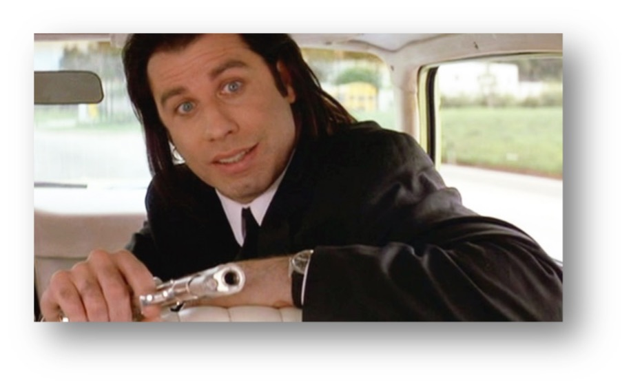
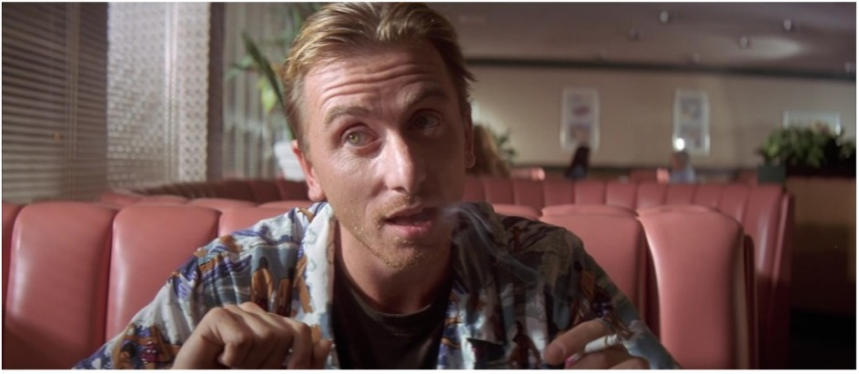
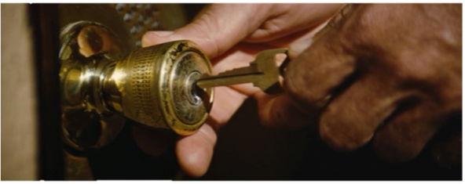
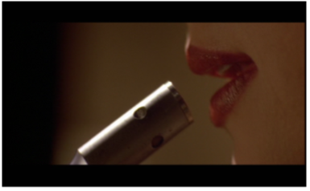
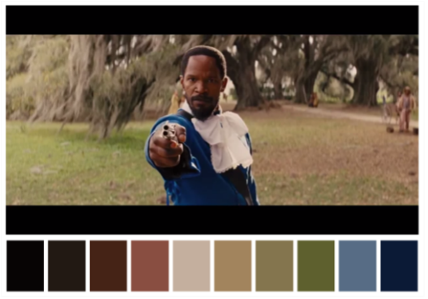
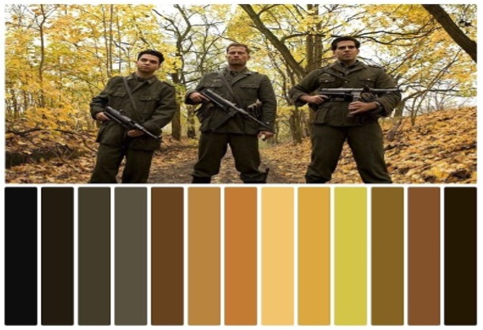

The Quentin Tarantino wilderness
If you had a rebellious heart and dyslexia the 90s’Hollywood was nothing but heaven for you. We didn’t even have to wait for The Cold War to end, ‘cause the cinema had already shown us how much of a spoiled brat it can get even during it.
Tarantino is a man of the people, so he naturally wanted to empathize with the public. That’s exactly why the low-budget, androgynous era that he found himself in offered a perfect foundation for the outrageous, yet very humanlike movies that he went on to direct.
It’s clear that he never liked the “Die Hard” experience; oh no, his violence was unexpected, confusing and funny in a very sick way. Some dare to say that Tarantino found the secret formula to creating timeless cult classics, but I think that he was just having fun, and he was lucky enough for America to also be in the mood for fun. I mean, you have to realize that “Reservoir Dogs” and “Pulp Fiction” came long before the Versace assassination, so showbiz had nothing to cry about, while DVDs and the World Wide Web were just emerging from their cave. The background is always more important than the actual outcome, that’s why one piece of the puzzle of Quentin’s genius career were his writing skills. He wrote his own screenplays from the beginning and the word goes that he enjoyed doing so.
Just imagine the freedom, the space that this can give you as a director. Not only that you are in control of it, but you also get to mark your own territory. A self-written script is a composition, an intimate work of art: you don’t write a movie, you write a story that deserves to be showed on a big screen in front of millions. Books have their own charm, but movies represent unique worlds with unique sets of rules; and whoever writes the script, that’s the guy that makes the rules.
Born in the March of 1963, Quentin chose the City of Angels as the breakthrough chance for his movie career. He dropped out of school at 15 years old, which gave him the time to get involved in the business, to start writing screenplays and kick start his dreams. He had what only him would call a dream job: he worked at Video Archives, a video store in Manhattan Beach. Actor Danny Strong (“Buffy the Vampire Slayer”; “Billions”) knew him back in the day and said that he was "such a movie buff. He had so much knowledge of films”. Tarantino attended acting classes at the “James Best Theatre Company” in his 20’s, where he met Craig Hanamm, with whom he went on to produce his first feature in ’87. His first paid writing gig was the script for the future “True Romance”. With that money he gave life to the neo-noir crime-thriller “Resevoir Dogs”(1992), which was screened at the “Sundance Film Festival”(the greatest in the US). After a few months of contemplation in Amsterdam, not a bad city for inspiration I must add, Tarantino hit the industry with the “Pulp Fiction” and well the rest is history.
“I dare you, I double dare you!”-Pulp Fiction (1992)
Bold, emotional, self-righteous, reflective: that’s how Quentin’s movies describe the man.
But other than a foot massage and someone to hit with a bat in the trunk of your car, here are the milestones of understanding Quentin Tarantino’s style and life work:
1.Staying in the tension

- Close-ups
From… the close-up of Pulp Fiction’s legendary opening scene at the restaurant, that almost persuades you into helping the guy rob the restaurant simply because “they’re not expecting to get robbed, not
as expecting anyway”
…to the moment Marvin is getting shot in the face and the sudden realization that “I shot Marvin in the face!” …unexpected close-ups are a God-given: they save some otherwise considered necessary shots and magically turn them into memorable ones.
 A filmmaker wants to keep the viewer entertained; wants to surprise him, make him feel like he’s in the story through any means, through any details.
We need to be seduced by the lipstick…
Fascinated by the death…
Scared of the events yet to come; tensed by the slow movements even more than of the quick ones. A close-up is a slow motion experience even if it is in real time speed. A proper casting team takes upon itself the responsibility to test from the beginning the actor’s ability of working with the camera. How well are they able to allow a camera to feel every stroke in such an uptight scene? After all, close-ups represent a replacement for saying: Careful, it’s about to go down.
- Contrasting elements between the scene and:
…The Music: This isn’t the “Titanic”. As far as indie action movies go, this is a milestone that if a director manages to get over, he’s almost at the finish line. Playing with emotions can be done in many ways, the
cinematographer either drowns the watcher in sadness/happiness/resentment/any expected feeling with the suitable and proper music that reflects it, or he goes indie style and full Tarantino on it, pouring some sunshine
over a stabbing scenery or opera during an explosion. Such actions would have been not only outrageous, but frankly unthinkable until the 90s, so we should be thankful that the transition to modern cinematography was well
conducted long before our suffering.
What is sometimes disregarded, but I find very useful for the atmosphere is the era of the song played. Tarantino uses 70s hippie tracks in 90s bloody and hateful crimes. In the 2019’s “The Gentlemen”, British director Guy Ritchie played French rap songs through a heist of a marijuana underground plantation that was ruled by suited up and very polite men. That is indeed what I call a valuable example of contrast achieved through music.
…The Palette of colors:
A Tarantino production always keeps in mind contrast and opposition:
The pictures speak for themselves, but in every scene there needs to be a color that stands out.
It’s either Jamie Fox’s blue suit in “Django Unchained” or the yellow leaves in “Inglorious Basterds”. The last thing a director wants is to fall prey to the visual monotony. People are visual primarily, that’s the whole idea of a movie- give us something alive to see. Boredom is the death of the eye art. Quentin captivates, radiates, overwhelms, shocks.
 - Unexpected One-liners
Either sassy, controversial or simply breathtaking, we come to the realization that the quotes often make more history than the movies themselves.
From The Godfather’s “I’m gonna make him an offer he can’t refuse” to Jessica Rabbit’s “I’m not bad, I’m just drawn that way”, there’s just something so nostalgic and deeply troubling about a good one-liner. Sadly, I have no “how to” advice here or “behind the scenes” explanation, for this is a matter of obvious delicacy and intuition. I can only give you the most memorable punch lines of Tarantino’s career and whisper in your ear to always steal for inspiration, in every area of your life, and steal with no guilt, from the greats that have come before us.
“Reservoir Dogs”(1992): 1.“-How does freedom feel? -It’s a change.”
2. “You shot me in a dream, you better wake up and apologize”
“Pulp Fiction”(1994): 1.“Just because you are a character doesn’t mean you have a character”
2.“They call it a Royale with cheese”
“Jackie Brown”(1997): 1.”Half a million dollars will always be missed”
2.”They don’t have your winning personality”
“Kill bill I&II”(2003 si 2004): 1.“You and I have unfinished business”
2.”Revenge is a dish best served cold”
“Inglorious Basterds”(2009): 1.“Can you Americans speak any other language besides English?”
2.”I love rumors! Facts can be so misleading, where rumors, true or false, are often revealing”
“Once upon a time in Hollywood”(2019): 1.”That was the best acting I’ve ever seen in my whole life”
2.”Anybody accidentally kills anybody in a fight, they go to jail”
3.”I hired you to be an actor, Rick, not a TV cowboy”
- Attention seeking characters
There must be some kind of a love-hate relationship between Quentin Tarantino and actor Samuel L. Jackson, because he is casted in too many of his movies if there even is such a thing.
Mr. Jackson played what I identify as an attention seeking character- an archetype that doesn’t necessarily represents the center of the plot, but he/she certainly wants to become it. These are the characters that are responsible for “stealing the show”. Such a performance results in an Academy Award for “Best Actor/ress in a Supporting Role”. Think of how Angelina Jolie stole the spotlight in “Girl, Interrupted”; or Brad Pitt in “Snatch”, “12 Monkeys”; or Meryl Streep in “The Devil wears Prada”; or Jack Black in “High Fidelity”; Joe Pesci in “Goodfellas”; Donnie Azoff in “The Wolf of Wall Street”or Christian Bale in everything he’s ever been in. Tarantino is a master of such attention-seeking roles, maybe because he is such a person in real life.
Samuel Jackson screamed for attention in the supporting roles of an old, black slave of a rich white family, where the years of constant oppression got to his head and turned him against his own race or the cliché of “Pulp Fiction”, in which he played the angry and impulsive assassin.
What is an attention seeking character more clearly? It stands out through physical attributes, either dressed differently, too skinny or too fat, tattoos or a speech impediment, or the easy way out: a much more famous actor/actress than the main character. The personality is often loud, outrageous in some manner, different, scary and funny. The kind of person you admire, but you better stay away from. Tarantino adds temperamental, capricious color through these archetypes. (Also from the Tarantino universe: Christoph Waltz in “Inglorious Basterds”; David Carradine in “Kill Bill”; Margaret Qualley in “Once Upon A Time…In Hollywood”).
- Sudden moves and exaggerated violence
We feed on violence. Our society deprives us from it, and for a good reason, but we want to unleash it or at least acknowledge it from time to time. Explicit violence, that the viewer knows subconsciously that it’s controlled and directed, represents an escape from the real world. The artist uses it to surprise, shock the viewer, and to knock him out of thinking he knows classic film narrative. Tarantino makes it quick, sudden and in a big style; he uses big guns, big elements (swords, maces, machine guns), often in the need to parody the victims’ reactions or just for the general satire of the audience. The public is supposed to be thrilled, adrenaline pumping through the veins. He keeps the viewer guessing when it comes to the plot, but he’s not scared to go big and obvious with the barbarity and cruel behaviors. This is surely a bloodthirsty world.
2. Playing with the plot
“Pulp Fiction” starts with the end, finishes with the beginning and has a lot of fun with the middle. There are only 2 ways this style turns out: it can be either too overwhelming or it can sweep you off your feet just the right amount. The plot is supposed to be alluring, interesting, like a forbidden affair, but not a too dangerous one. Negative critiques have been brought to 2004’s “Primer” time-traveling complicated timeline, that ultimately just makes you feel stupid about yourself, because you don’t understand it and honestly leaves you hanging. We want the “Memento” thrill, not an advanced school course.
If a director enjoys this type of circular movement within their plot, but would like a safer and more manageable version of it, director Steven Soderbergh will always have their back. Steal from his Ocean’s trilogy, the modern “Lucky Logan” or even “The Informant”. The idea is expected, yet very witty: the characters pull something that seems magic and you only see the consequences, but you couldn’t possibly understand how they did it, until they reveal the process step by step. It makes the audience feel young and innocent, like a kid at a magic show. The only detail to be paid attention to is that it’s necessary for the solution of the puzzle to be showed at the climax of a scene (For more reference see also 2015’s “Focus”; 2013’s “Now you see me”;2003’s “The Italian job”).
3. Mastering the mystery
The screenplay shouldn’t explain right away something that certainly needs explaining. It is preferable for the public to be confused just the right amount. The filmmaker is ought to play with the watcher’s mind- make him think, don’t give everything away, this isn’t a Swedish buffet.
A film is a small, 2D and much more enthusiastic interpretation of life-and in life it’s always highly more satisfying when you get something you worked hard for. The viewers want to think they are smart, smarter than the director, that they know the answer and they can figure it all out on their own…to which the director should respond with: let them try! A quality screening is expected to make them work for it and right when they start to get tired and start doubting themselves, the filmmaker gives the final solution to the tricky situation.
Cliché or not, but a movie is a journey, and the journey is more important than the destination. Every director should take their Tarantino daily pill and keep the mystery: keep the public in the dark with the constant hope of the coming light.
Sentimental yet very honest conclusion:
Tarantino played with his characters in a way that nobody dared to play with before. But I don’t know everything either, ‘cause many pieces form the puzzle and the magician will never revel all of his secrets. What one can be certain of is that Quentin offered the seemingly saturated Hollywood what it needed: an original and fresh touch. He made his way through the mud and saw the sunlight.
As an actor he never found his place even if he tried quite a few times, but we don’t need to feel sorry for him. As a director, he promised us to make 10 movies and he’s reached number 9. Now it seems like the world is not ready for a final masterpiece. And “Once upon a time in Hollywood”(2019), even if it’s supposed to be the beginning of a fairytale from the title, it truly feels like a sad goodbye-it brings not only the sweet and sorrow retirement of such a magnate, but also the old age of some of contemporary cinema’s biggest stars: DiCaprio and Pitt. From the rapist days of “Thelma & Louise” and the drug addiction of “The Basketball Diaries”, it took only two global financial crises and the CGI technology for the entire world to change. The third millennium changed many aspects and we are shaped to see the world of film industry with different eyes. With 2019 obviously bringing another giant to his knees (Scorsese’s “Irishman”) we can say that the room has been cleared of the “dust” and new spirit is expected.
Not only expected, but welcomed. And a new Tarantino will come.
articol scris de Ilona Dragomir
fotograf: Mădălina Dinu